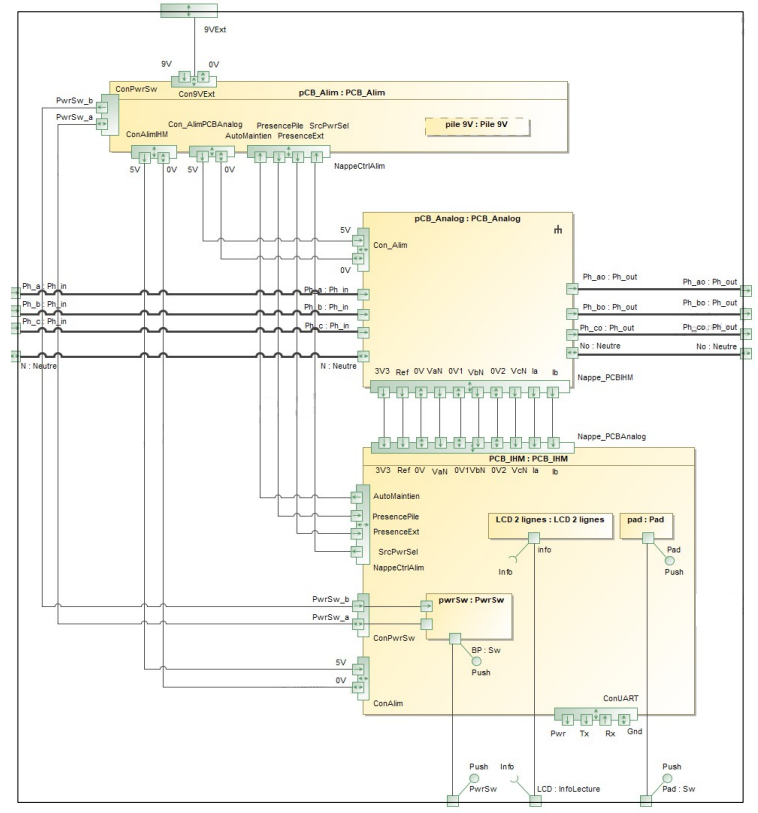
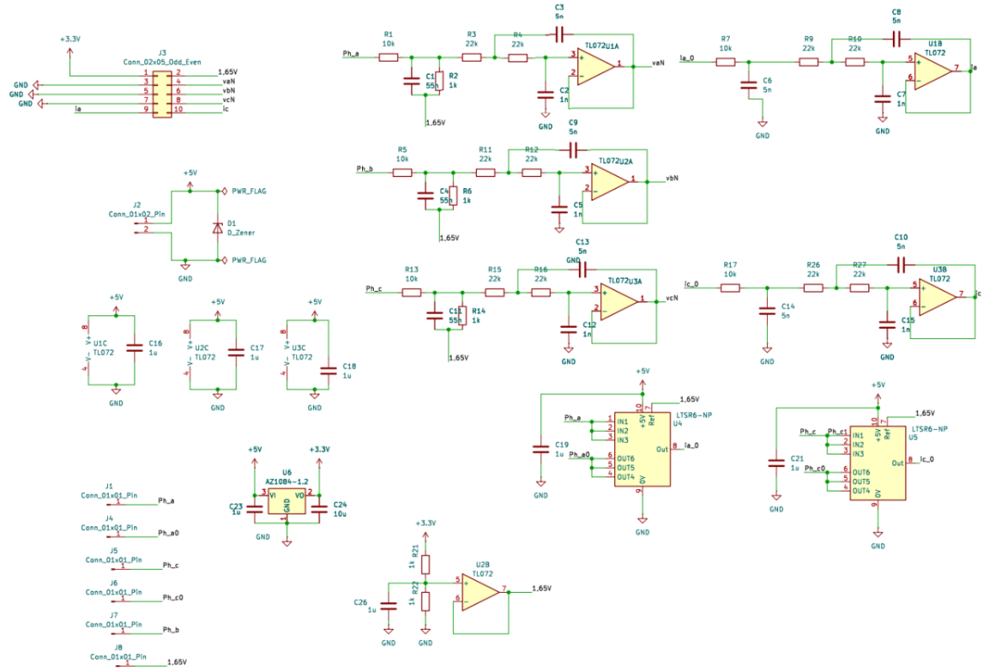
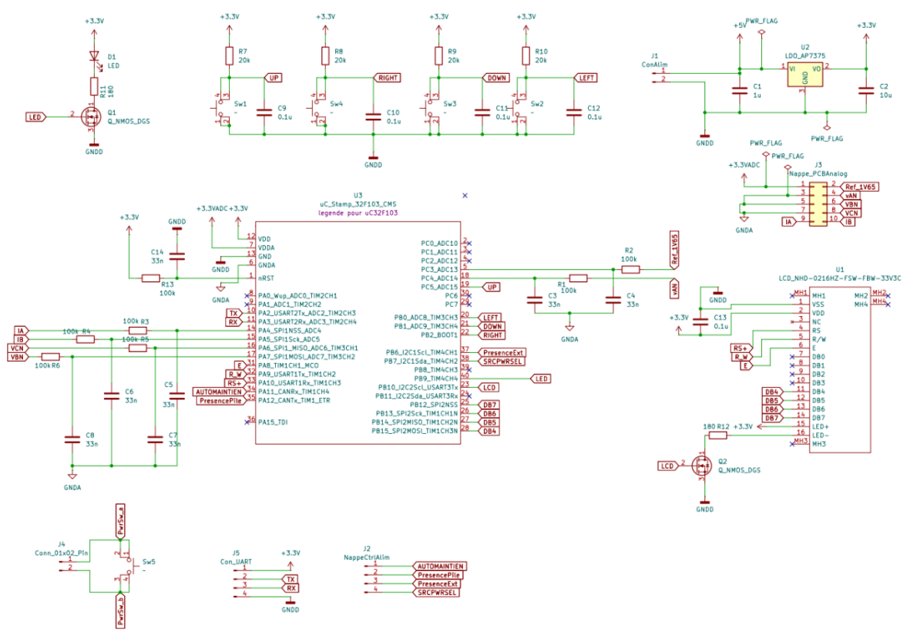
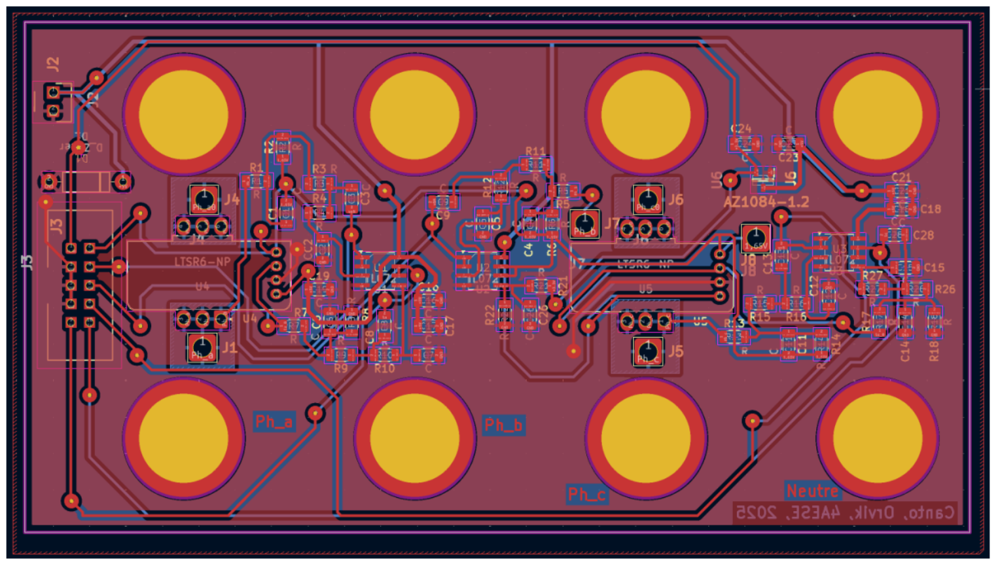
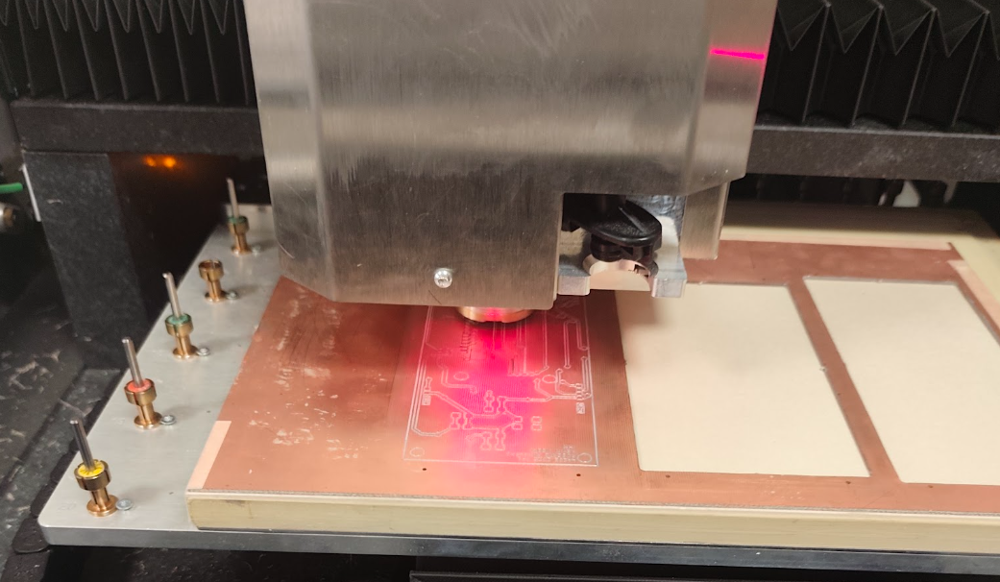
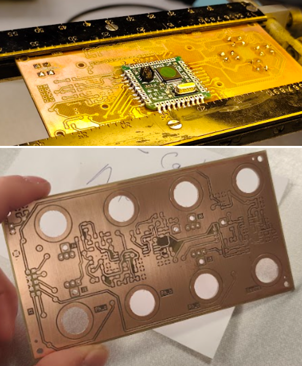
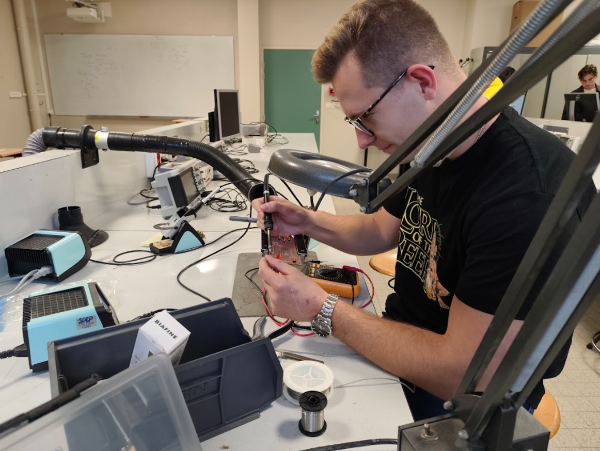
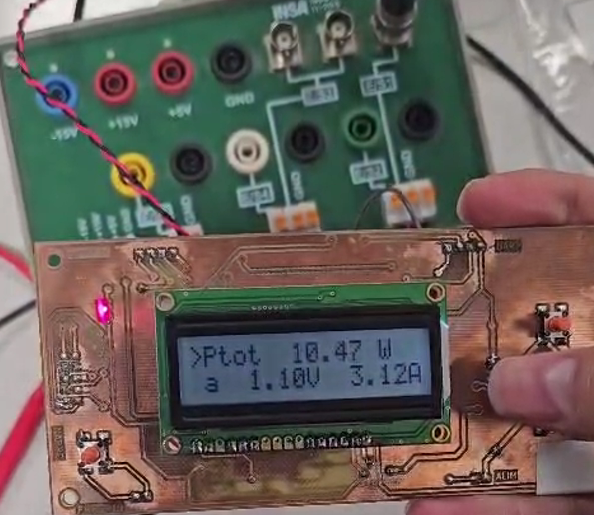

Engineering portfolio article · Schematic, PCB, fabrication, and bring-up evidence
End-to-end engineering of a digital wattmeter platform spanning analog front-end design, STM32 integration,
PCB layout and in-house fabrication. The implementation emphasizes manufacturable hardware decisions, clean
measurement paths, and repeatable validation from assembly through functional bring-up.
STM32
KiCad
Analog front-end
PCB milling
Validation
System Architecture
Top-level partition of sensing, analog conditioning, MCU processing, and user-interface functions.
Defines signal flow and implementation constraints for the complete wattmeter platform.

Figure 1 — System architecture of the digital wattmeter platform.

Figure 2 — Analog schematic including conditioning and measurement stages.
Analog Schematic
Acquisition path designed for robust measurement quality and noise-aware conditioning.
Component-level choices aligned with calibration and manufacturability targets.
HMI Schematic
User interface electronics and control logic integrated with the main embedded platform.
Design prioritizes readability, operational safety, and deterministic interaction.

Figure 3 — Human-machine interface schematic.

Figure 4 — Analog PCB layout with routing and grounding strategy.
Analog PCB Layout
Placement/routing optimized for signal integrity and coupling control.
Clear separation between sensitive analog areas and digital activity.
HMI PCB Layout
UI-focused layout balancing connector accessibility and board compactness.
Rapid prototyping workflow configured for repeatable board production.
Process control centered on dimensional consistency and turnaround speed.
Isolation Milling
Isolation milling strategy used to realize traces and clearances in-house.
Toolpath and machining parameters tuned to reduce defects.

Figure 7 — Isolation milling operation during PCB manufacturing.

Figure 8 — Fabricated bare boards after machining and inspection.
Fabricated Boards
Post-process inspection verifies continuity, isolation, and dimensional tolerance.
Boards prepared for assembly and staged validation.
Assembly
Controlled soldering sequence applied to analog and UI assemblies.
Rework criteria and visual inspection checkpoints ensure build quality.

Figure 9 — Soldering and assembly phase.

Figure 10 — Hardware bring-up and initial validation tests.
Bring-up & Validation
Incremental power-up and functional verification from rails to full operation.
Measurement consistency checks and issue tracking close the hardware loop.
Deliverables
This page captures the engineering narrative. The full PDF includes complete implementation details, validation evidence, and final manufacturing documentation.